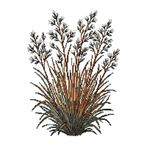

Little Bluestem
Schizachyrium scoparium

Little Bluestem is a grass for focal point, mid-border, structure, suited to full sun and clay, loam or sandy soil, flowering Aug, Sep, Oct.
| Type | Grass |
|---|---|
| Mature height | 100 cm |
| Spread | 45 cm |
| Aspect | full sun |
| Foliage | Deciduous |
| Hardiness | USDA 3a-9b |
| Pollinator-friendly | No |
| Pet-safe | Not confirmed |
Where to use it in a border
At around 100 cm, it sits best toward the back of a border, or on its own as a focal point with room around it. Give it about 45 cm of room to spread, roughly 2 to the metre when planted in a drift. It is hardy across USDA zones 3a to 9b, so check it suits your area before planting.
It appears in our lists of full sun, clay soil, sandy soil.
Border Builder uses Little Bluestem's height, spread, soil, bloom months and companions to place it in a full border plan for your own conditions, on iPhone and iPad.
Flowering through the year
Good companions
Plants that share its conditions and style, chosen to complement its place in the border:
- Prairie Dropseedto edge in front
- Blanket Flower 'Arizona Sun'to edge in front
- Blue Grama 'Blonde Ambition'to edge in front
- Lanceleaf Coreopsisto edge in front
- Little Bluestem 'Standing Ovation'as a partner at the same level
- Little Bluestem 'The Blues'as a partner at the same level